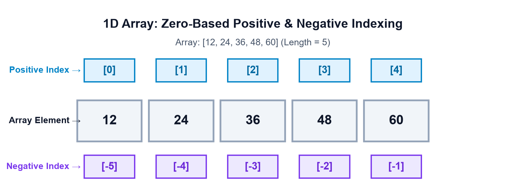
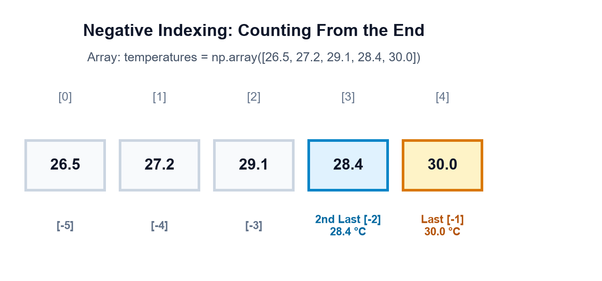
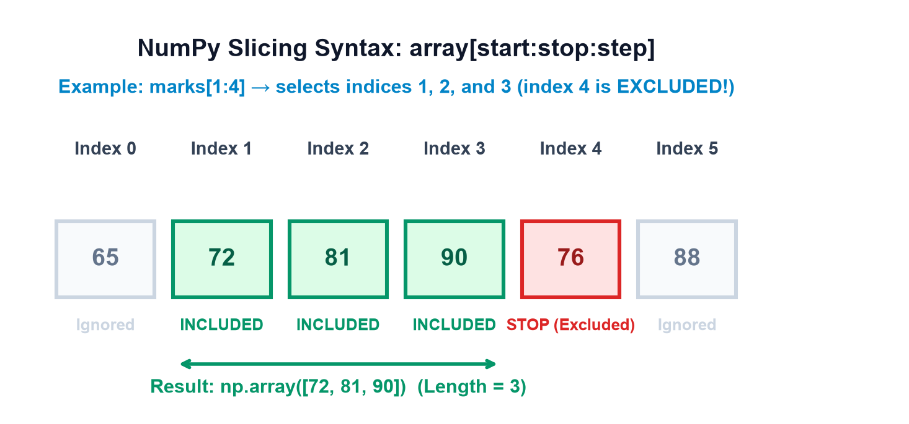
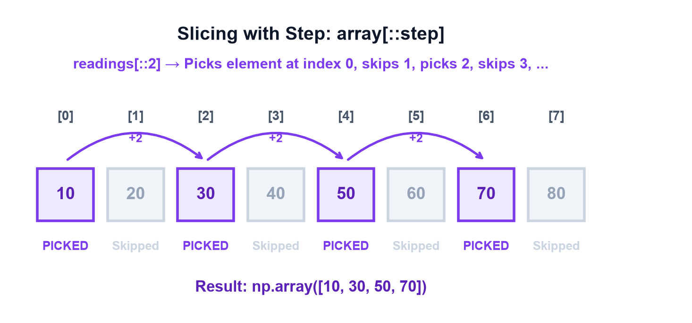
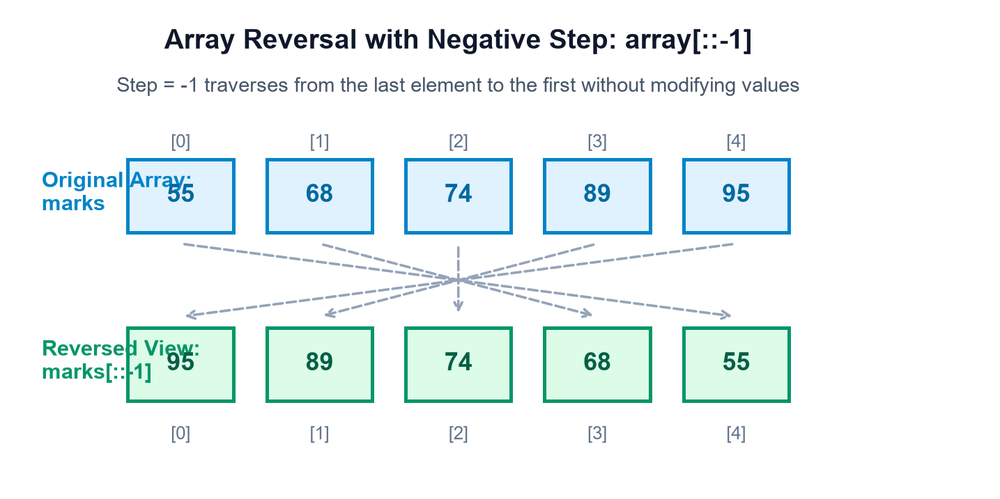
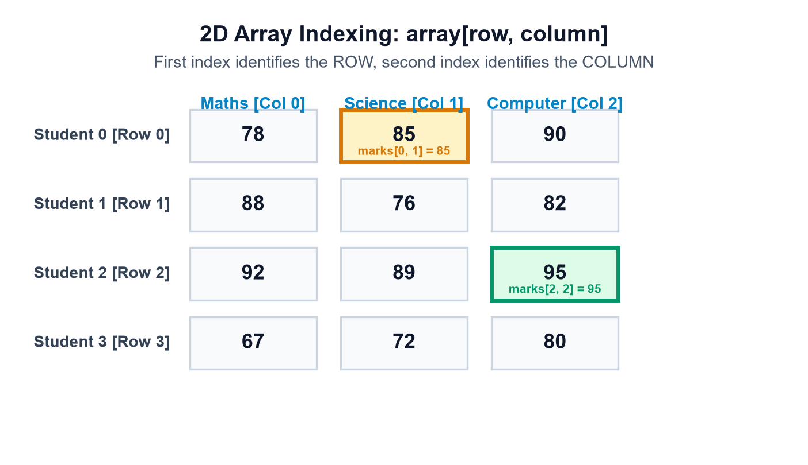
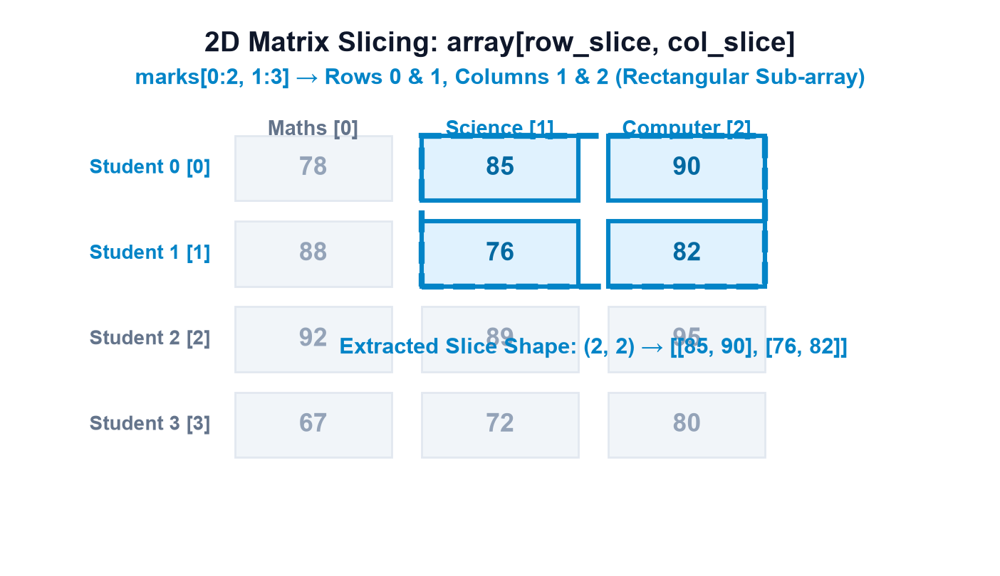
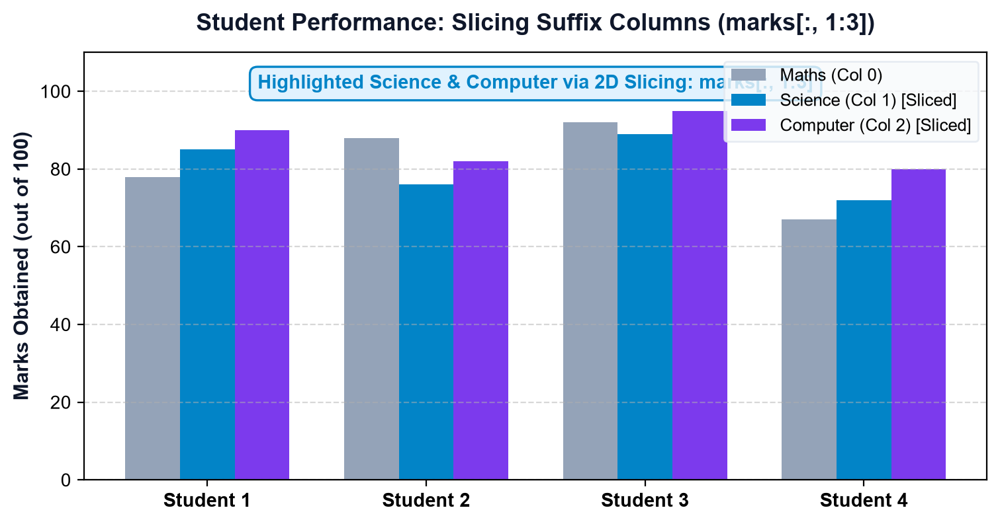
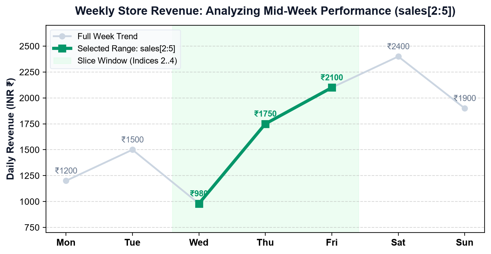
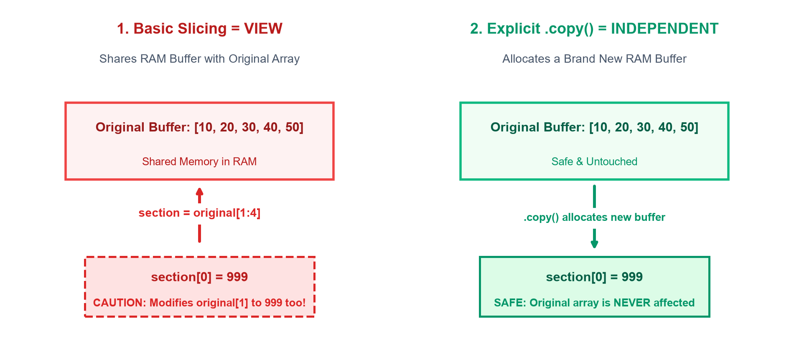

Topic 5 — Array Indexing & Slicing
Master element selection and sub-array extraction in NumPy! Seekheiye zero-based positive indexing,
negative indexing backward from the end, slicing syntax array[start:stop:step] with exclusive stop,
omitted boundaries, step jumps, array reversal with [::-1], 2D matrix indexing and rectangular block slicing,
combining slices with steps, basic slicing views vs independent copies, and build a real-life Student Marks & Sales Data Explorer.
Goals Learning Objectives
Is comprehensive lesson ke end tak aap in sabhi core indexing aur slicing concepts par complete practical grip hasil kar lenge:
- Array Indexing Basics: Position number ke through single element ko access karna.
- Zero-Based Indexing: Samajhna ki Python aur NumPy me first element ka index hamesha
0hota hai. - Negative Indexing: Array ke aakhri elements ko piche se
-1,-2se retrieve karna bina length count kiye. - 1D Array Selection: 1-dimensional lists aur series me se values extract karna.
- 2D Array Indexing: 2D matrix me rows aur columns ko target karke specific cells access karna (
arr[row, col]). - Row & Column Selection: Complete single row (
arr[1]) ya entire column (arr[:, 0]) extract karna. - Slicing Syntax:
start:stop:stepsyntax ko master karna. - Exclusive Stop Index: Samajhna ki slicing me
stopindex hamesha excluded hota hai (kyunkicount = stop - start). - Negative Indices in Slices: Slices me negative numbers ka use karke boundary define karna.
- Reversing an Array: Negative step
arr[::-1]se array ko reverse traverse karna. - Range of Values Extraction: Continuous intervals ko extract karna.
- 2D Array Slicing: Sub-matrices aur rectangular blocks ko slice karna (
arr[r_start:r_stop, c_start:c_stop]). - Slicing with Steps: Alternating elements aur regular intervals (jaise every 2nd ya 3rd reading) filter karna.
- Basic Slicing vs Advanced Indexing: Continuous views vs integer-array/boolean indexing copies ka fundamental fark.
- Views vs Copies: Samajhna ki basic slice ek view (shared RAM memory) hota hai, aur use mutate karne se original array change ho sakta hai.
- Safe Array Modification: Kab
.copy()lagana mandatory hai taaki original data corrupt na ho. - Avoid Common Mistakes: Out-of-bounds error, commas vs brackets confusion, aur slicing pitfalls se bachna.
- Real-World Application: Student gradebooks, sensor metrics, aur sales datasets par actual data slicing execute karna.
01 Opening Hook — Finding One Value in a Sea of Data
Imagine kijiye aapke paas ek massive school database hai jisme 5 students ke 3 alag-alag subjects ke marks store hain. Ek grocery shop owner ke paas pure month ki daily revenue ka record hai. Aur ek weather forecasting center ke paas pure hafte ke hourly temperatures hain.
Humein real-life data science me kabhi bhi pure dataset ki ek sath zaroorat nahi hoti:
- Kayi baar humein sirf ek specific student ke marks dekhne hote hain.
- Kayi baar humein sirf Science subject ka average nikalna hota hai.
- Kayi baar humein sirf Monday se Wednesday tak ka temperature analyze karna hota hai.
- Kayi baar shop owner ko sirf last 3 days ki sales check karni hoti hai.
• Indexing (इंडेक्सिंग): Ek single specific element ko uski exact position se pick karta hai (jaise kisi book ka page number 42 kholna).
• Slicing (स्लाइसिंग): Elements ki ek range ya continuous section ko extract karta hai (jaise page number 10 se 20 tak padhna).
Aaiye ek simple array [12, 24, 36, 48, 60] ko dekhte hain jisme positive aur negative indexing ko visually map kiya gaya hai:
| Element Value | 12 | 24 | 36 | 48 | 60 |
|---|---|---|---|---|---|
| Positive Index (Left to Right) | 0 | 1 | 2 | 3 | 4 |
| Negative Index (Right to Left) | -5 | -4 | -3 | -2 | -1 |

02 Section A — Basic Array Indexing
NumPy me kisi bhi element ko access karne ke liye square brackets [] ka use hota hai.
Python hamesha zero-based indexing follow karta hai: yani array ka sabse pehla item
index 0 par baithta hai, second item index 1 par, aur n-th item index n-1 par.
import numpy as np
# 5 students ke test marks store karte hain
marks = np.array([78, 85, 92, 67, 88])
print(marks[0]) # Pehla student (Index 0)
print(marks[2]) # Teesra student (Index 2)
print(marks[4]) # Paanchva student (Index 4)
Line-by-line Breakdown:
• marks[0] → Index 0 par pehla number 78 hai, jo successfully return hua.
• marks[2] → Index 2 par teesra element 92 hai.
• marks[4] → Total 5 elements hain, isliye aakhri element ka index 5 - 1 = 4 hai, jo 88 deta hai.
import numpy as np
# 5 days ki store sales (in INR ₹)
sales = np.array([1200, 1500, 980, 1750, 2100])
print("First day:", sales[0])
print("Third day:", sales[2])
print("Last day:", sales[4])Dekhiye kaise same indexing syntax alag-alag datasets me accurate values fetch karne ke liye kaam karta hai.
03 Section B — Negative Indexing
Jab humein array ka last element, second last element ya end se data chahiye ho, aur humein array ki exact length maloom na ho, tab Negative Indexing sabse powerful tool banta hai.
-1hamesha sabse aakhri element ko point karta hai.-2hamesha second-last element ko point karta hai.-narray ke pehle element tak backward count karta hai.
import numpy as np
temperatures = np.array([26.5, 27.2, 29.1, 28.4, 30.0])
print("Latest temp (-1):", temperatures[-1])
print("Previous temp (-2):", temperatures[-2])import numpy as np
expenses = np.array([120, 250, 90, 400, 180, 320])
print("Latest entry:", expenses[-1])
print("Previous entry:", expenses[-2])
arr[len(arr)] mat likhiye!
Kyunki zero-based indexing hone ki wajah se 5-length array ka aakhri index 4 hota hai, 5 nahi.
arr[len(arr)] execute karne par Python IndexError: index is out of bounds throw karega.
Cleanest solution: Simply use arr[-1]!
04 Section C — Understanding Slicing Syntax
Jab humein ek se zyada continuous elements ko extract karna hota hai, tab hum Slicing ka use karte hain. Slicing ka master formula hai:
array[start : stop : step]
Hinglish me in teeno parameters ka matlab samajhiye:
start: Selection kis index se shuru hoga (ye element shamil / included hota hai). Agar omit karein, toh default0hota hai.stop: Selection kis index par rukega. Crucial Rule: Stop index wala element kabhi include nahi hota (EXCLUDED)! Selection stop se theek pehle (stop - 1) tak hota hai.step: Har element ke beech kitne steps ka jump lena hai. Default value1hoti hai.
Aapko hamesha confuse hone ki zaroorat nahi hai ki slice me kitne elements aayenge. Jab step 1 ho:
Kitne elements aayenge = stop - start.
Jaise
arr[1:4] me 4 - 1 = 3 elements aayenge (Indices: 1, 2, aur 3).

import numpy as np
marks = np.array([65, 72, 81, 90, 76, 88])
# Slicing from index 1 to 4 (picks index 1, 2, 3)
selected = marks[1:4]
print(selected)import numpy as np
sales = np.array([1000, 1250, 900, 1600, 1800, 1400])
# Slicing from index 2 to 5 (picks indices 2, 3, 4)
mid_week_sales = sales[2:5]
print(mid_week_sales)
Notice kijiye ki sales[2:5] ne index 2 (900), index 3 (1600), aur index 4 (1800) ko pick kiya.
Index 5 (1400) ko strictly chhod diya gaya.
05 Section D — Slicing with Omitted Boundaries
Python me start ya stop ko khali (omit) chhodna bahut common aur expressive shorthand hai:
arr[:stop]→ Shuruwat se lekar indexstop - 1tak sabhi elements.arr[start:]→ Indexstartse lekar bilkul aakhri element tak sabhi.arr[:]→ Array ke sabhi elements ka complete view.
import numpy as np
temperatures = np.array([24, 26, 28, 30, 32, 31])
# Pehle 3 readings (Index 0, 1, 2)
print(temperatures[:3])import numpy as np
expenses = np.array([50, 100, 150, 200, 250, 300])
# Index 3 se lekar aakhri element tak
print("From index 3 onwards:", expenses[3:])
# Entire array selection
print("All elements:", expenses[:])lst[:] ek naya independent copy banata hai,
lekin NumPy me arr[:] sirf ek view banata hai jo original array ki memory share karta hai!
Is difference ko aage Section K me hum detail me samjhenge.
06 Section E — Slicing with Step
Step parameter ye define karta hai ki agle element par pahunchne ke liye kitne positions ka jump lagana hai.
Jab step 2 ho, toh ye alternate elements pick karta hai; jab 3 ho, toh har teesra element pick karta hai.

import numpy as np
readings = np.array([10, 20, 30, 40, 50, 60, 70, 80])
# Every 2nd element (Indices 0, 2, 4, 6)
print(readings[::2])import numpy as np
sales = np.array([100, 200, 300, 400, 500, 600, 700, 800, 900])
# Step 3 (Indices 0, 3, 6)
print(sales[::3])Jab humein high-frequency sensor streams (jaise 1,000 samples per second) ko downsample karna ho, toh slicing with step bina kisi for-loop ke instantaneous execution deta hai!
07 Section F — Reverse an Array
Agar hum step ko negative -1 kar dein, toh NumPy array ko reverse direction (end se start ki taraf)
traverse karne lagta hai. Shorthand: array[::-1].

import numpy as np
marks = np.array([55, 68, 74, 89, 95])
reversed_marks = marks[::-1]
print("Original:", marks)
print("Reversed:", reversed_marks)import numpy as np
temperatures = np.array([25, 27, 26, 30, 31, 29, 28])
chronological_rev = temperatures[::-1]
print("Reversed order:", chronological_rev)array[::-1] sirf order ko ulta karta hai,
ye numbers ko sort (descending order) nahi karta! Agar original array [10, 50, 20] ho,
toh [::-1] se [20, 50, 10] milega, [50, 20, 10] nahi.
08 Section G — Indexing in 2D Arrays
Real-world tabular data (jaise spreadsheets, database tables, aur images) 2-dimensional form me hota hai. NumPy me 2D array me elements ko access karne ka golden rule hai:
array[row_index, column_index]
Consider kijiye 4 students ke 3 subjects (Maths, Science, Computer) ka marks table:
| Student (Row Index) | Maths [Col 0] | Science [Col 1] | Computer [Col 2] |
|---|---|---|---|
| Student 0 [Row 0] | 78 | 85 (marks[0, 1]) | 90 |
| Student 1 [Row 1] | 88 | 76 | 82 |
| Student 2 [Row 2] | 92 | 89 | 95 (marks[2, 2]) |
| Student 3 [Row 3] | 67 | 72 | 80 |

import numpy as np
marks = np.array([
[78, 85, 90], # Row 0: Student 0
[88, 76, 82], # Row 1: Student 1
[92, 89, 95], # Row 2: Student 2
[67, 72, 80] # Row 3: Student 3
])
# Row 0, Column 1 (Student 0 ka Science score)
print("marks[0, 1]:", marks[0, 1])
# Row 2, Column 2 (Student 2 ka Computer score)
print("marks[2, 2]:", marks[2, 2])import numpy as np
# Student 1 ki complete row extract karte hain
student_1_all = marks[1]
print("Student 1 all marks (Row 1):", student_1_all)
# Sabhi students ke Maths marks (Column 0 across all rows)
maths_column = marks[:, 0]
print("All Maths marks (Col 0):", maths_column)
Note on Colon :: Jab hum row ki jagah : likhte hain (marks[:, 0]),
iska matlab hota hai "har ek row me jao, aur sirf column 0 ka value uthao"!
09 Section H — 2D Array Slicing
2D arrays me slicing ka matlab hota hai ek rectangular block (sub-matrix) extract karna. Syntax:
array[row_start : row_stop , col_start : col_stop]
Pehle comma ke left side wala row slice execute hota hai, fir right side wala column slice apply hota hai.

import numpy as np
marks = np.array([
[78, 85, 90],
[88, 76, 82],
[92, 89, 95],
[67, 72, 80]
])
# Rows 0 & 1, Columns 1 & 2 (Science & Computer for first two students)
sub_marks = marks[0:2, 1:3]
print("Sub-matrix (shape 2x2):")
print(sub_marks)
import numpy as np
# 3 branch stores across 4 quarters
sales = np.array([
[120, 150, 180, 200], # Branch 0
[100, 130, 170, 190], # Branch 1
[140, 160, 210, 230] # Branch 2
])
# Branches 1 & 2 (Rows 1:3), Quarters 0 & 1 (Cols 0:2)
selected_sales = sales[1:3, 0:2]
print("Selected Branch & Quarter Sales:")
print(selected_sales)
10 Section I — Combining Indexing, Slicing, and Steps
NumPy aapko freedom deta hai ki aap rows aur columns par independently alag-alag slicing aur step rules combine kar sakein.
import numpy as np
data = np.array([
[1, 2, 3, 4],
[5, 6, 7, 8],
[9, 10, 11, 12],
[13, 14, 15, 16]
])
# Har 2nd row (0, 2) aur har 2nd column (0, 2)
checkerboard = data[::2, ::2]
print("Alternate grid:")
print(checkerboard)import numpy as np
# 3 sensors x 5 hourly timestamps
sensor_data = np.array([
[20, 21, 22, 23, 24],
[25, 26, 27, 28, 29],
[30, 31, 32, 33, 34]
])
# All rows, but columns starting from index 1 with step 2 (picks cols 1 and 3)
sampled = sensor_data[:, 1::2]
print("Sampled Odd Timestamps:")
print(sampled)11 Section J — Basic Slicing versus Advanced Indexing
Beginner students aksar confuse hote hain ki slicing aur indexing ke kitne styles hain:
- 1. Basic Slicing (Colons
:): Continuous ranges aur regular steps pick karta hai (jaisearr[1:4]yaarr[::2]). Ye memory me VIEW banata hai. - 2. Integer Array Indexing (Lists
[]): Non-continuous, specific positions ko pick karta hai (jaisearr[[0, 2, 5]]). Ye hamesha ek COPY banata hai. - 3. Boolean Indexing (Conditions): True/False mask ke basis par elements filter karta hai (jaise
arr[arr >= 40]). Ye bhi hamesha ek COPY banata hai.
import numpy as np
marks = np.array([55, 72, 88, 91, 67, 95])
# Sirf student 0, student 2, aur student 5 ke marks uthao
selected = marks[[0, 2, 5]]
print("Custom picked students:", selected)import numpy as np
marks = np.array([35, 48, 76, 29, 90, 63])
# Filtering: Sirf wo marks jahan condition True hai (>= 40)
passed = marks[marks >= 40]
print("Passed marks:", passed)12 Section K — Views versus Copies
Ye NumPy ka sabse mahatvapurna architectural concept hai jise har data scientist ko samajhna padta hai:
- View (Shared Memory): Basic slice naya memory space create nahi karta. Ye original array ke memory buffer ko hi point karta hai. Agar aap slice ko modify karenge, toh original array bhi chupke se modify ho jayega!
- Copy (Independent Memory):
.copy()method RAM me ek bilkul independent buffer allocate karta hai. Isme changes karne se original array bilkul safe aur untouched rehta hai.

import numpy as np
original = np.array([10, 20, 30, 40, 50])
section = original[1:4] # Returns a VIEW!
# Modifying the view
section[0] = 999
print("Original:", original)
print("Section: ", section)
Notice kijiye ki section[0] ko 999 karte hi original array ka index 1 bhi 999 ban gaya!
Kyunki dono ek hi memory block ko share kar rahe the.
import numpy as np
original = np.array([10, 20, 30, 40, 50])
section = original[1:4].copy() # Independent COPY
# Modifying the copy
section[0] = 999
print("Original: ", original)
print("Independent copy:", section)
.copy() lagane par original array ka 20 bilkul safe raha.
Jab bhi aap kisi sub-array par destructive experimental cleaning kar rahe hon, hamesha .copy() ka use karein.
13 Section L — Common Beginner Mistakes & Debugging
Har beginner student indexing aur slicing seekhte waqt in 10 common traps me phasta hai:
Incorrect Assumption: 5-element array me arr[5] last element dega.
Reality: Zero-based indexing hone ki wajah se 5-length array ke valid indices 0, 1, 2, 3, 4 hote hain.
arr = np.array([10, 20, 30, 40, 50])
# IndexError: index 5 is out of bounds for axis 0 with size 5
correct = arr[4] # Ya arr[-1]Incorrect Assumption: arr[10] likhne se element jiska value 10 hai wo mil jayega.
Reality: arr[x] me x position hoti hai, value nahi! Agar value match karni hai toh condition use karein: arr[arr == 10].
Incorrect Assumption: arr[1:4] se 4 elements aayenge (1, 2, 3, 4).
Reality: Stop index 4 excluded hota hai, isliye sirf 3 elements milte hain (indices 1, 2, 3).
Incorrect Assumption: 2D array me arr[col, row] likhna.
Reality: Hamesha row pehle aati hai, column baad me: arr[row, col].
Incorrect Assumption: Python list style arr[0][1] ko hi NumPy me likhna.
Reality: arr[0][1] slow temporary array banata hai. NumPy ka standard and fast syntax arr[0, 1] hai.
Incorrect Assumption: Backward counting -0 se shuru hoti hai.
Reality: Math me -0 == 0 hota hai, isliye arr[-0] pehla element hi return karega! Negative indexing hamesha -1 se shuru hoti hai.
Incorrect Assumption: b = a[1:4] ek fresh copy banata hai jise safely modify kiya ja sakta hai.
Reality: Slicing returns a view! b[0] = 500 original a ko bhi modify kar dega. Hamesha a[1:4].copy() karein.
Incorrect Assumption: arr[::-1] values ko descending order me sort kar dega.
Reality: Ye sirf physical order ko ulta karta hai. Sorting ke liye np.sort(arr)[::-1] use karein.
Incorrect Assumption: arr[1] aur arr[1:2] ek hi result dete hain.
Reality: arr[1] ek single scalar number return karta hai, jabki arr[1:2] ek 1D array (shape (1,)) return karta hai!
Incorrect Assumption: Kisi function me array slice pass karke usme changes karne par bahar ka data safe rahega.
Reality: Function ke andar slice view hone ki wajah se caller ka original array corrupt ho jata hai.
14 Interactive Learning Workshops
Test array: arr = np.array([10, 20, 30, 40, 50, 60]). Buttons click karke dynamically output dekhiye:
Target matrix: marks = [[78, 85, 90], [88, 76, 82], [92, 89, 95], [67, 72, 80]]
15 Practical Mini-Project — Student Marks & Sales Data Explorer
Aaiye ek complete, real-world Python utility banate hain: Student Marks & Sales Data Explorer! Is script me hum 2D academic grading matrix aur 1D daily sales trend dono par indexing, slicing, filtering, aur safe view/copy operations perform karenge.
import numpy as np
# 1. Setup Student Marks Matrix (5 Students x 3 Subjects: Maths, Science, Computer)
students = ["Alice", "Bob", "Charlie", "David", "Emma"]
subjects = ["Maths", "Science", "Computer"]
student_marks = np.array([
[82, 75, 90], # Alice
[91, 88, 94], # Bob
[65, 70, 72], # Charlie
[78, 85, 89], # David
[95, 92, 98] # Emma
])
print("==================================================")
print("STUDENT MARKS & SALES DATA EXPLORER AUDIT")
print("==================================================")
# A. Single Element Indexing: Bob's Computer Score (Row 1, Col 2)
bobs_comp = student_marks[1, 2]
print(f"\n1. Bob's Computer Score (marks[1, 2]): {bobs_comp}")
# B. Column Slicing: All Science Scores (Col 1)
all_science = student_marks[:, 1]
print(f"2. All Science Marks (marks[:, 1]): {all_science}")
# C. 2D Block Slicing: Top 2 Students, All Subjects
top_two = student_marks[0:2, :]
print("3. Top 2 Students Grid (marks[0:2, :]):")
print(top_two)
# D. Boolean Indexing: Distinctions (>= 90)
distinctions = student_marks[student_marks >= 90]
print(f"4. Total Distinctions (Marks >= 90): {distinctions}")
# E. Safe Copy vs View Verification
safe_subset = student_marks[0:2, 0:2].copy()
safe_subset[0, 0] = 100 # Modify only the copy
print(f"5. Original Alice Maths (Should remain 82): {student_marks[0, 0]}")
# F. Weekly Store Revenue Slicing
days = ["Mon", "Tue", "Wed", "Thu", "Fri", "Sat", "Sun"]
weekly_sales = np.array([1200, 1500, 980, 1750, 2100, 2400, 1900])
# Extract mid-week sales (Wed, Thu, Fri -> indices 2 to 5)
midweek = weekly_sales[2:5]
print(f"\n6. Mid-Week Sales Window (sales[2:5]): {midweek}")
print(f" Mid-Week Total Revenue: ₹{midweek.sum()}")
print(f" Weekend Sales (Last 2 Days): {weekly_sales[-2:]}")1. Subject Highest Scorer Finder: Har column me
np.argmax(student_marks[:, col]) ka use karke pata lagaiye ki Maths, Science, aur Computer me highest marks kis student ke hain.
2. Weekend Sales Growth Rate: Negative slicing (
sales[-2:]) se weekend total nikaliye aur weekday average (sales[:5].mean()) se growth percentage calculate kijiye.
16 Practice, Revision & Knowledge Challenges
Part A: Predict the Output (10 Questions)
Q1: arr = np.array([10, 20, 30, 40, 50]); print(arr[1:4])
[20 30 40]Reasoning: Slicing index 1 se shuru hota hai aur stop index 4 excluded hota hai. Toh indices 1, 2, aur 3 pick hote hain.
Q2: arr = np.array([5, 10, 15, 20, 25]); print(arr[-2])
20Reasoning:
-1 last element (25) hota hai, aur -2 second-last element (20) hota hai.
Q3: arr = np.array([1, 2, 3, 4, 5, 6]); print(arr[:3])
[1 2 3]Reasoning: Start omitted hone par default 0 hota hai. Indices 0, 1, 2 return hote hain.
Q4: arr = np.array([1, 2, 3, 4, 5, 6]); print(arr[3:])
[4 5 6]Reasoning: Stop omitted hone par index 3 se lekar array ke end tak sabhi elements aate hain.
Q5: arr = np.array([10, 20, 30, 40, 50, 60]); print(arr[::2])
[10 30 50]Reasoning: Step 2 hone se index 0, 2, aur 4 pick hote hain.
Q6: arr = np.array([1, 2, 3, 4, 5]); print(arr[::-1])
[5 4 3 2 1]Reasoning: Negative step
-1 pure array ko reversed order me traverse karta hai.
Q7: m = np.array([[1, 2], [3, 4], [5, 6]]); print(m[1, 0])
3Reasoning: Row index 1 ([3, 4]) aur Column index 0 → element 3.
Q8: m = np.array([[10, 20], [30, 40]]); print(m[:, 1])
[20 40]Reasoning: Sabhi rows ka Column 1 extract karta hai.
Q9: a = np.array([10, 20, 30]); b = a[1:]; b[0] = 99; print(a)
[10 99 30]Reasoning: Basic slice
a[1:] ek VIEW hota hai. b[0] ko change karne se a[1] bhi 99 ban gaya!
Q10: a = np.array([12, 18, 25, 30]); print(a[a > 20])
[25 30]Reasoning: Boolean indexing sirf un elements ko pick karta hai jahan condition True hai (25 aur 30).
Part B: Write the Code (8 Exercises)
Exercise 1: 5 students ke array me se 3rd student ke marks retrieve kijiye.
third_student = marks[2]Exercise 2: Daily sales array me se aakhri 3 din ki sales extract kijiye.
last_three_sales = sales[-3:]Exercise 3: 1D array se har 2nd temperature reading select kijiye.
alternate_temps = temperatures[::2]Exercise 4: Kisi 1D array ko bina uski values sort kiye reverse order me lijiye.
reversed_arr = arr[::-1]Exercise 5: 2D marks array (students x subjects) me se Science subject (Col 1) ke sabhi marks nikaliye.
science_marks = marks[:, 1]Exercise 6: 2D sales matrix me se Row 1 & 2 aur Column 0 & 1 ka rectangular sub-matrix extract kijiye.
sub_matrix = sales[1:3, 0:2]Exercise 7: Boolean indexing ka use karke passing marks (>= 40) filter kijiye.
passed = marks[marks >= 40]Exercise 8: Sliced range ka ek independent copy banaiye aur use safely modify kijiye.
safe_slice = original[1:4].copy()
safe_slice[0] = 999 # Original remains safe!Part C: Debugging Challenges (6 Questions)
Debug 1: IndexError: index 5 is out of bounds for axis 0 with size 5
last = arr[len(arr)]Reason: 5 items ke array me indices 0 to 4 hote hain.
len(arr) 5 hai jo out of bounds hai.Fix:
last = arr[-1] ya arr[len(arr) - 1].
Debug 2: TypeError: list indices must be integers or slices, not tuple
lst = [[1, 2], [3, 4]]; print(lst[0, 1])Reason: Python lists comma notation
[0, 1] support nahi karte. Ye sirf NumPy ndarray me chalta hai.Fix: Pehle
np.array(lst) banaiye, fir arr[0, 1] use kijiye.
Debug 3: Unexpected Mutation of Original Dataset
subset = data[:3]; subset[:] = 0Reason:
subset ek view tha, isliye original data ke pehle 3 elements bhi 0 ban gaye!Fix:
subset = data[:3].copy().
Debug 4: Slice returns Empty Array arr[4:1]
rev = arr[4:1] (Expected reverse slice)Reason: Default step
+1 positive hota hai. Start (4) stop (1) se bada hai, isliye forward step chal hi nahi sakta.Fix: Step ko
-1 kijiye: arr[4:1:-1].
Debug 5: Slicing Excluded Desired Last Item
marks[1:4]Reason: Stop index 4 excluded hota hai, isliye Student 4 nahi aaya.
Fix: Stop index ko 5 kijiye:
marks[1:5].
Debug 6: Negative Slicing Zero Trap
arr[-3:-0]Reason:
-0 Python me 0 ke barabar hota hai, isliye slice arr[-3:0] ban kar empty array return karta hai.Fix: End tak slice karne ke liye stop ko omit kar dijiye:
arr[-3:].
Part D: Conceptual MCQs (8 Questions)
MCQ 1: Python aur NumPy me array ka pehla element kis index par hota hai?
B) 0
C) -1
D) None
Correct Answer: B) 0
Explanation: Python zero-based indexing follow karta hai, isliye pehla element index 0 par hota hai.
MCQ 2: Agar kisi 1D array ki length 8 hai, toh arr[-1] kaunsa element dega?
B) Aakhri element (Index 7)
C) IndexError
D) 8th index
Correct Answer: B) Aakhri element (Index 7)
Explanation: Negative index -1 hamesha array ke aakhri item ko point karta hai.
MCQ 3: Slice arr[2:6] me total kitne elements aayenge?
B) 2
C) 4
D) 5
Correct Answer: C) 4
Explanation: Stop index 6 excluded hota hai. Elements at indices 2, 3, 4, 5 aayenge (6 - 2 = 4 elements).
MCQ 4: array[::-1] ka exact operation kya hota hai?
B) Elements ko descending order me sort karna
C) Array ke physical order ko reverse traverse karna
D) Pehla element delete karna
Correct Answer: C) Array ke physical order ko reverse traverse karna
Explanation: Step -1 array ko ulta traverse karta hai, ye sorting perform nahi karta.
MCQ 5: 2D array me 3rd row aur 2nd column ko access karne ka sahi NumPy syntax kya hai?
B) arr[2, 1]
C) arr[1, 2]
D) arr[2][3]
Correct Answer: B) arr[2, 1]
Explanation: Zero-based indexing me 3rd row ka index 2 hota hai, aur 2nd column ka index 1 hota hai.
MCQ 6: NumPy me 2D matrix ka Column 0 extract karne ke liye kya likhte hain?
B) arr[:, 0]
C) arr[0]
D) arr[:0]
Correct Answer: B) arr[:, 0]
Explanation: Row position par colon (:) sabhi rows ko select karta hai, aur column 0 extract hota hai.
MCQ 7: Basic slice arr[1:4] dwara return kiya gaya object kya hota hai?
B) Shared Memory View
C) Immutable Tuple
D) Linked List
Correct Answer: B) Shared Memory View
Explanation: NumPy performance optimize karne ke liye basic slicing par view return karta hai.
MCQ 8: Agar hum slice ko modify karein bina original array par effect dale, toh kya use karna chahiye?
B) .copy()
C) .clone()
D) .duplicate()
Correct Answer: B) .copy()
Explanation: .copy() RAM me fresh independent memory allocate karta hai.
Part E: Real-Life Mini-Challenges
Challenge 1: Student Marks Explorer — Top Scoring Subject Isolation
Task: Sirf Physics (Col 1) ke marks extract kijiye aur unka class average calculate kijiye.
Solution:
physics_marks = marks[:, 1]
avg_physics = physics_marks.mean()
print("Physics Class Average:", avg_physics)Challenge 2: Weekly Sales Range Analyzer — Weekend Revenue Isolation
[1200, 1500, 980, 1750, 2100, 2400, 1900] me Sat aur Sun ka share nikalna hai.Task: Negative slicing ka use karke last 2 days extract kijiye aur total sales me unka percentage nikalye.
Solution:
weekend_sales = weekly_sales[-2:]
weekend_total = weekend_sales.sum()
percentage = (weekend_total / weekly_sales.sum()) * 100
print(f"Weekend Revenue: ₹{weekend_total} ({percentage:.1f}%)")Challenge 3: Weather Sensor Downsampler — Hourly to Bi-Hourly
Task: Step slicing ka use karke 24-element array ko 12 elements me downsample kijiye.
Solution:
hourly_temps = np.array([20, 21, 22, 23, 24, 26, 28, 30, 31, 32, 31, 29,
28, 27, 26, 25, 24, 23, 22, 21, 21, 20, 19, 19])
bi_hourly = hourly_temps[::2]
print("Downsampled Readings (12 samples):", bi_hourly)⚡ Quick Reference: Indexing & Slicing Cheat Sheet
| Syntax Pattern | Example Expression | Meaning / Behavior | View or Copy? |
|---|---|---|---|
arr[i] |
arr[0] |
Single element at index i (zero-based). | Scalar |
arr[-i] |
arr[-1] |
Element at position i from the end (-1 is last). | Scalar |
arr[start:stop] |
arr[1:4] |
Elements from start to stop - 1 (stop excluded). | VIEW |
arr[:stop] |
arr[:3] |
From beginning index 0 up to stop - 1. | VIEW |
arr[start:] |
arr[2:] |
From index start up to the very last element. | VIEW |
arr[::step] |
arr[::2] |
Selects every step-th element across entire array. | VIEW |
arr[::-1] |
arr[::-1] |
Reverses array order (traverses backward). | VIEW |
arr[r, c] |
arr[0, 1] |
Individual cell at row r and column c in 2D array. | Scalar |
arr[r, :] |
arr[1, :] |
Extracts entire row r as a 1D vector. | VIEW |
arr[:, c] |
arr[:, 0] |
Extracts entire column c across all rows. | VIEW |
arr[r1:r2, c1:c2] |
arr[0:2, 1:3] |
2D rectangular block slice of rows and columns. | VIEW |
arr[[i, j, k]] |
arr[[0, 2, 4]] |
Integer list indexing for non-continuous positions. | COPY |
arr[condition] |
arr[arr >= 40] |
Boolean mask indexing filtering matching values. | COPY |
arr.copy() |
arr[1:4].copy() |
Creates an independent duplicate in fresh RAM. | COPY |
🎯 Self-Paced Mastery Checklist
Apni learning ko verify karne ke liye in sabhi checkpoints ko tick kijiye:
- Mujhe zero-based positive indexing ka concept clear hai.
- Main bina length count kiye
arr[-1]se last element access kar sakta hoon. - Mujhe pata hai ki slice me stop index hamesha excluded hota hai.
- Main
start:stop:stepke omitted boundaries ko confidently use karta hoon. - Main
arr[::-1]se array ko reverse traverse kar sakta hoon. - Main 2D array me
arr[row, col]se specific cell extract kar sakta hoon. - Main complete row (
arr[r]) aur entire column (arr[:, c]) nikal sakta hoon. - Main 2D rectangular sub-matrix block slice kar sakta hoon.
- Mujhe clear pata hai ki basic slice ek VIEW hota hai aur use mutate karne se original array badal sakta hai.
- Main safe mutation ke liye hamesha
.copy()ka use karta hoon.